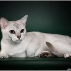

 Как-то раз простая кошка Собралась на маскарад. Нарядилась она немножко – Маска, шерстяной подклад… И с тех пор простая кошка Стала очень непростой — Невской кличут маскарадной, С очень трепетной душой! История происхождения породы невская маскарадная На самом деле своё название невская маскарадная кошка получила именно за темную маску, загадочно прикрывающую ее очаровательную мордочку. Имя породе дали петербургские фелинологии. Порода кошек невская маскарадная вышла на авансцену в северной столице зимой 1988 года. Примечательно, что произошло это на первой же в стране выставке кошек. Жаждущая кошек и зрелищ публика с восхищением рассматривала сибиряков необычного окраса. Эксперты тоже не прошли мимо дебютантки и с гордостью присвоили ей имя города, в котором состоялась премьера породы. Официально невская маскарадная порода кошек зарегистрирована в 1992 году. С тех пор родившаяся в Санкт-Петербурге порода невская маскарадная (сибирский колорпойнт) год от года становится всё популярнее, завоевывая поклонников во всем мире. Описание породы невская маскарадная невская маскарадная кошка фото Гордость российских заводчиков появилась на свет естественным образом. Сибиряки крутили амуры с сиамскими кошками и плод этой любви – невский маскарадный кот. От папы сибиряка невак взял в наследство крепкий и сильный корпус, очень густую шерсть, обладающую особыми свойствами и крепкое здоровье (но не без нюансов). Мама-сиамка подарила маскарадный костюм – светлый корпус, темную маску, подпалы на лапах и хвосте, а так же необыкновенные голубые и очень яркие глаза. Эта нарядная внешность никогда не останется незамеченной! невский маскарадный кот Ниже — основные особенности породы, описанные в стандарте невской маскарадной кошки: Голова У кошек и котов этой породы крупная голова, по форме напоминающая короткую трапецию. Лоб, гласит стандарт породы, широкий и округленный, переход к спинке носа – плавный. Стопа нет. Подбородок не выступающий, но сильный и мощный. Щеки плотные. Уши широко расставленные (расстояние между ушами больше ширины одного уха), немного наклоненные вперед. Приветствуются щетки и кисточки на ушах. Глаза округлые, поставлены широкого и косо. Нижнее веко полукруглое, верхнее дугообразное. Цвет глаз голубой, причем, у представителей этой породы глаза могут встречаться разных оттенков – лавандовые, средиземноморские, синие, сапфировые и так далее. Тело Невская маскарадная кошка считается одной из самых крупных в мире. Её размеры немногим уступают гигантам – мейн-кунам. Предки одарили этих животных крепким костяком и хорошо развитой мускулатурой. кошка невская маскарадная Невские маскарадные имеют сильные конечности, образующие в пропорции с телом практически идеальный прямоугольник. Лапы круглые и крупные, между пальцами растет шерсть. Хвост у основания широкий, сильный, кончик хвоста округлен. Опушение знатное. Кошки породы невская маскарадная весят около 6-ти кг, а коты могут превысить планку в 8-9 кг. Шерсть Невские маскарадные котята рождаются с шерстью, у которой уникальные характеристики: она, как гласят отзывы владельцев, грязе- и водоотталкивающая и, к тому же, не образующая колтунов! У классической невской маскарадной кошки шерсть средней длины. Она становится длиннее от лопаток к крупу, причем, на боках шерсть мягче, чем на спине. Сибирский колор-пойнт имеет красивые штанишки, роскошный воротник, плюмаж на хвосте и двойной подшерсток по всему телу. Любопытно, что когда кошка линяет, воротник и штанишки практически полностью исчезают. ВАЖНО! Гладкошерстная невская маскарадная кошка, пожалуй, единственная из представителей длинношерстных пород, которая из-за особенностей своего шерстяного покрова практически не аллергена. Окрас. невская маскарадная порода кошек На первый взгляд может показаться, что окрасы представителей этой породы довольно однообразны, но это не так. Вариаций окрасов неваков насчитывается минимум 6! Самые распространенные – это «сил пойнт» (Seal-point), который свое название получил от английского слова «тюлень» и «сил тебби поинт» (Seal tabby point). В переводе на петербургский кошачий диалект, это означает, что котенок такого окраса будет иметь светлую шерсть на теле и темные пойнты на лапах, хвосте, ушах и мордочке. Черная+белая окраска тоже возможны. Еще один из видов окрасов невской маскарадной кошки — «рэд пойнт» (Red-point). Этот тон подразумевает переходы окраса в рыжий спектр. «Блю пойнт» (Blue-point) – голубоватые интонации в окрасе. «Черепаховый пойнт» (Tortie-point) присущ, как правило, только кошкам. Все чаще встречаются неваки с серебристыми оттенками на все вышеперечисленные комбинации колор пойнтов. невский маскарадный котенок Белоснежные носочки на лапах и такого же цвета и тона пятна на мордочке допустимы у всех вариаций окрасов. Невский маскарадный биколор не требует симметричности и упорядоченности форм пятнышек. А вот шоколадно-лиловая гамма – под запретом. ВАЖНО! Котята этой породы рождаются исключительно белого цвета. Это объясняется тем, что специфический окрас невской кошки образован особым термочувствительным геном, который не дает пигментам проникать в шерстинки при высоких температурах. Другими словами, окрашенные участки шерсти (уши, мордочка, лапы и хвост) – это самые холодные места у кошек. Википедия перечисляет основные недостатки породы, среди которых числятся даже небольшие затемнения шерсти на корпусе. Характер невская маскарадная кошка Суровая на вид невская маскарадная кошка на самом деле существо уравновешенное и трепетное. Заводчики знают, что уже с рождения малыши очень привязываются к человеку. Впоследствии это выражается в том, что неваки по-настоящему любят не дом, а хозяина. Но это не рабская любовь, а партнерские отношения – невская кошка не терпит панибратства, она любит, когда с ней общаются на равных. В противном случае, кошка обижается надолго. Но мстить невская маскарадная не будет – для питерской интеллигентки это выше ее достоинства. Не занимать представителям этой породы и упрямства. Поэтому общение с ней – это психологическая битва, побеждает в которой самый мудрый и выдержанный. Невская маскарадная кошка довольно болтлива и если вас начинают утомлять ее бесконечные песни, подумайте – вдруг она читает по памяти Есенина или Гумилева. невская маскарадная С детьми питерская маскарадная кошка быстро находит общий язык, а вот незнакомцев даже представлять ей не нужно – чужаков неваки не принимают. Вообще же, в геномном наборе невской маскарадной кошки заложены хорошие аристократические манеры поведения.